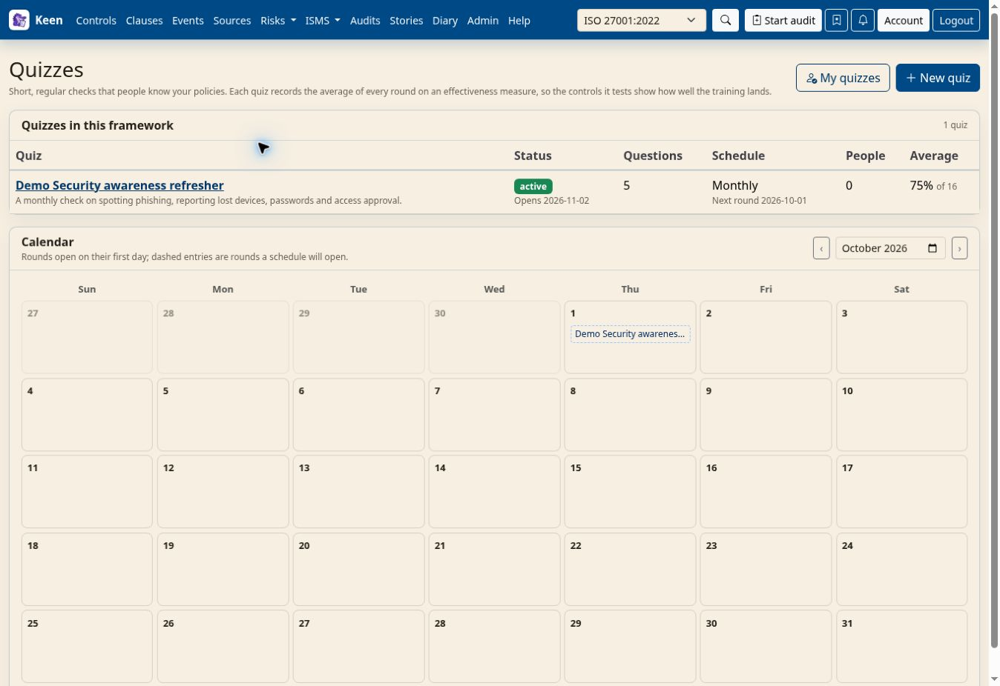
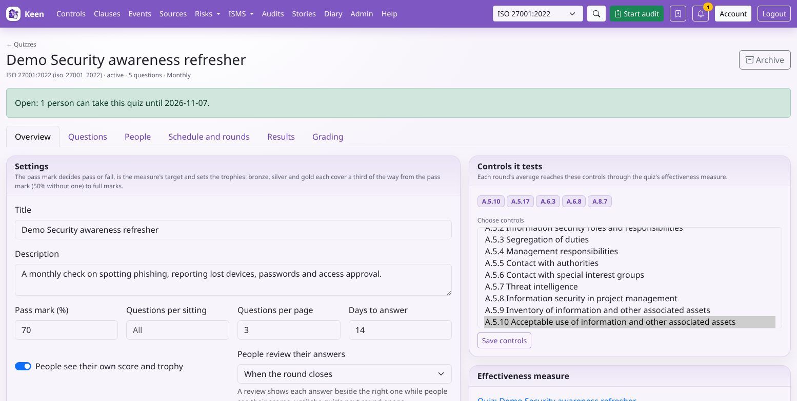
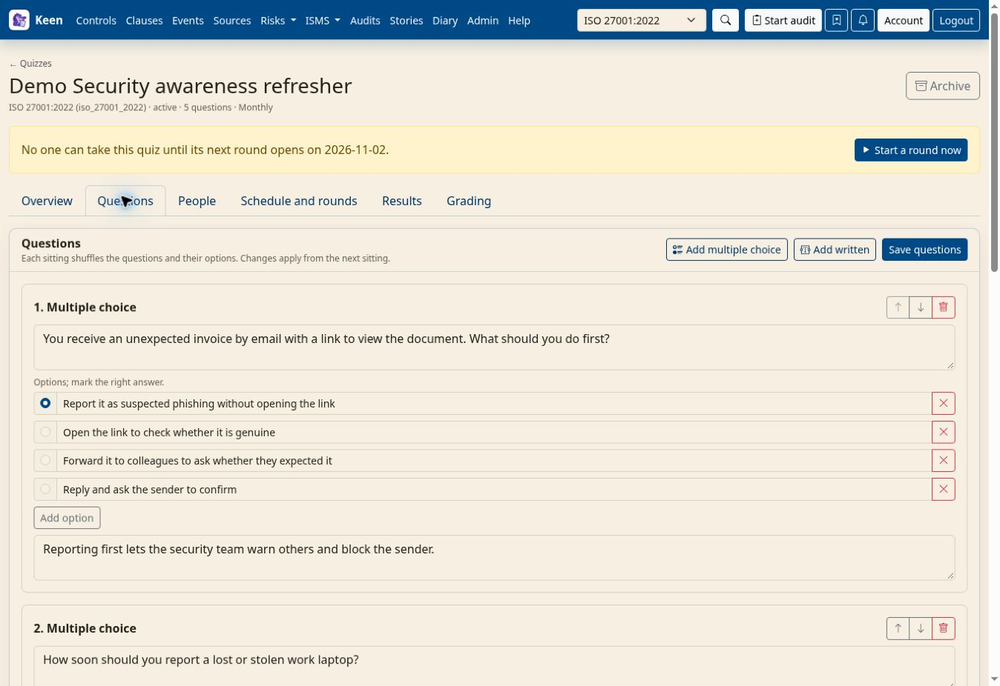
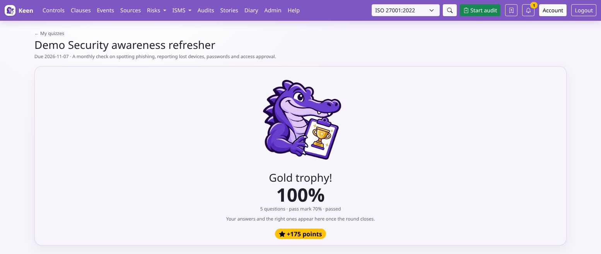
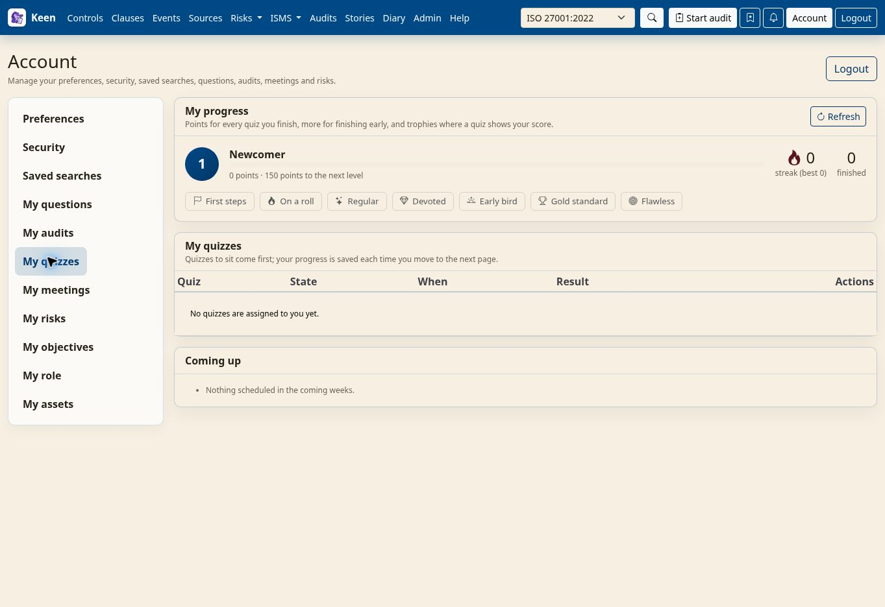
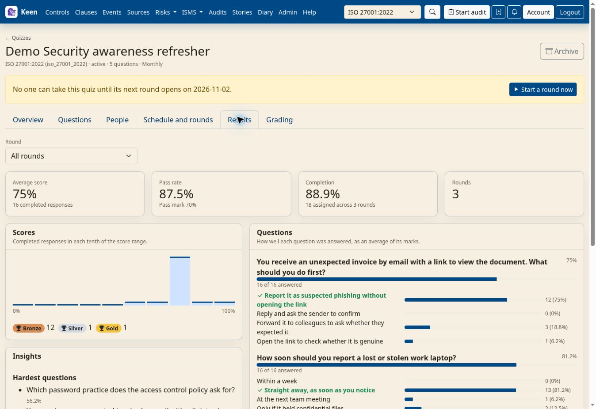

Using Keen
Quizzes and training checks
Chapter 13 of 17
Quizzes


A quiz checks that people know your policies: a few multiple-choice and written questions, sat in regular rounds. Each round's average score is recorded on an effectiveness measure, so the controls the quiz tests show how well the training lands, without showing anyone's own score.
- Round
- One dated sitting of a quiz for the people it is assigned to. A round opens, falls due and closes. People can take a quiz only while one of its rounds is open.
- Attempt
- One person's sitting of a round: the questions in the order they saw them, and their answers.
- Pass mark
- The score that counts as a pass. It is also the measure's target and the score where trophies start.
quiz.manage writes, schedules and grades quizzes and sees each person's answers and scores. quiz.read sees quizzes, their questions without the answers, and results that describe a group. Everyone sits the quizzes assigned to them from My quizzes on their account page.


Write a quiz
- Open ISMS → Quizzes and choose New quiz. A quiz belongs to the framework selected in the top navigation and starts as a draft.
- On the Overview tab, set the pass mark, how many questions each sitting draws (blank asks them all), how many appear on each page and how many days each round stays open. Choose whether people see their own score and trophy, and when they can review their answers beside the right ones: when the round closes, as soon as they hand in, or never.
- Choose the controls the quiz tests and save them. They are linked through the quiz's effectiveness measure.
- On the Questions tab, add multiple-choice questions with two to ten options and one right answer, and written questions answered in a sentence or two. A multiple-choice question's explanation appears with its answer; a written question's explanation is the guidance graders work from. Save the questions.
- Choose Activate. A quiz needs at least one question to be active. A one-off quiz, with no schedule, opens straight away for its days to answer and invites everyone assigned; a scheduled quiz opens on its first round's date.
Each sitting shuffles the order of the questions and of every question's options, so nobody learns answers by position. When a quiz holds more questions than a sitting draws, questions the person has not seen before come first. A change to the questions applies from the next sitting; attempts keep the questions as they were shown.
A review needs the quiz to show scores, since answers beside the right ones give a score away. It waits while the person still has another round of the quiz to sit, and closes once the quiz's next round opens, whether the schedule or a quiz manager opens it, so answers never carry from one round into another. People keep their scores; quiz managers keep every attempt in full.


Assign people and schedule rounds
- On the People tab, add people from People, Keen accounts without a People record, and organisation roles. Assigning an account creates a People record linked to it, so its scores belong to a person.
- Save. Open rounds follow the change: newcomers are invited, and people taken off the list leave a round unless they have started it.
- To repeat the quiz, set its first round and how it repeats on Schedule and rounds, using the same date rules as scheduled audits. Without a schedule the quiz is one-off: activating it opens its round, and you can start another round there when you need one.
A notice at the top of the quiz says whether people can take it now and, if not, when they next can. While no round is open, Start a round now opens one from today for the quiz's days to answer.
A round is for everyone assigned who can sign in to Keen: each person named, each person placed in an assigned role and each account holding one. People without an account stay on the list and join the rounds that open once they have one. When mail is set up, people are invited as a round opens, with a calendar entry for its due date, and reminded once shortly before it falls due unless they have handed in. A round closes on its due date; you can close it early, move its due date or reopen it until its result is recorded. After that, start a new round for anyone who missed it.
Sit a quiz
- Open your account page and choose My quizzes, or follow the link in the invitation. Quizzes to sit come first, with their due dates.
- Choose Start. Answer the questions on the page and choose Save and continue. Your answers are saved as you move to the next page, so you can stop and carry on later from where you left off; leaving part-way through a page loses only that page.
- On the last page, choose Hand in. Keen asks first if any questions are unanswered.
When the quiz shows scores, the result gives your score and whether you passed and, from the pass mark up, puts a bronze, silver or gold trophy on the Keen Mitigator's clipboard. When the quiz allows, you can review your answers beside the right ones, with explanations, grades and feedback, until the quiz's next round opens. The review waits while you have another round of the quiz still to sit, and your score stays after the review closes. A written answer waits for a grade before your score is final.


Going deeper: trophies, points, levels and badges
Trophies split the way from the pass mark (50% when the quiz has none) to full marks into thirds: bronze, silver and gold. Every finished quiz earns 100 points, finishing by the halfway point of the round earns 25 more, and a trophy adds 15, 30 or 50. Points raise your level from Newcomer to Legend. Badges mark your first quiz, a run of three rounds finished, five and ten quizzes, a quiz finished on the day it opened, a gold trophy and a perfect score. Trophy and perfect-score rewards count only quizzes that show you your score. There is no leaderboard: your progress is yours alone.


Grade written answers
The Grading tab lists written answers waiting for a grade, oldest first and without names, so each answer is graded on its merits. Read the question's guidance, choose a grade from 1 to 5 in half points and add feedback. A grade is worth its share of one question: a 4 earns 0.8 of a mark. An attempt completes with its score when its last written answer is graded. A blank answer scores nothing and takes no grade, and your own answers wait for another quiz manager. To change a grade, open the person's attempt from the Results tab.
Read the results
The Results tab shows all rounds or one: completed responses, the average score, the pass rate, completion, the spread of scores and the trophies won, and how well each question was answered. Insights list the hardest and best-known questions and, for quiz managers, the wrong answers people choose most, which point to policy wording or training worth revisiting. Quiz managers also see everyone in a round and can open each attempt.
When a round closes with every response graded and at least three people finished, its average is recorded on the quiz's effectiveness measure and appears on the controls the quiz tests. A quiz's measure changes only through the quiz.


Going deeper: why results wait for three people
An average of one or two responses tells anyone who knows who sat the quiz how each person scored. So quiz.read and the measure see a round only once it has closed with every response graded and at least three completed, and never names, answers or the options people chose. While a round is open, its average would change with each response and give scores away, so nothing is recorded until it closes. For the same reason a recorded round stays closed: reopening it for one latecomer would let anyone compare the averages before and after. A grade changed after a round closes updates its recorded average. Readers see each question's options in alphabetical order, so the order they were written in says nothing about the right answer.